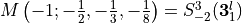
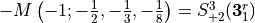
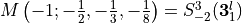
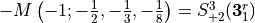
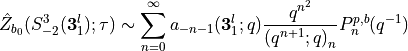
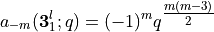
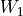
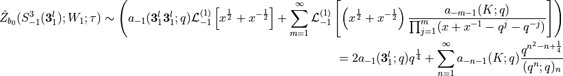

Example 5.3.2
This notebook demonstrates the results of subsection 5.3.2 of [1]. Here, we will compute the  invariant with defects of the homology sphere  and  by leveraging Conjecture 3 of the paper.
invariant with defects of the homology sphere  and  by leveraging Conjecture 3 of the paper.
No wilson line insertion, negative side
From equation 2.18, which we have

which we directly use to figure out the invariant. Inserting the Habiro coefficients for the left handed trefoil

this leads us to
[20]:
from sage.combinat.q_analogues import q_pochhammer
def habiro_3l(m):
q = var('q')
return (-1)^(m) * q^(m*(m+3)/2)
Zhat_habiro = sum(habiro_3l(-n-1) * q^(n^2)/q_pochhammer(n,q^(n+1)) for n in range(0, 10)).series(q, 20)
Zhat_habiro
[20]:
(-1)*q^(-1) + 1 + 1*q^2 + 1*q^6 + (-1)*q^7 + (-1)*q^13 + (-1)*q^19 + Order(q^20)
Which we compare with the result from the plumbing description
[18]:
from pyPlumbing import Plumbing
P = Plumbing.from_Brieskorn([2,3,5])
P.zhat(["A",1], P.trivial_spin_c(["A",1]),20)
[18]:
q^(-3/2)(1 - 1q^(1) - 1q^(3) - 1q^(7) + 1q^(8) + 1q^(14) + 1q^(20) + O(q^21))
Wilson line insersion of , negative side
In our case Equation 2.22 reduces to

where we used equation 2.24 in the last line. This leads to
[27]:
Zhat_habiro_w1 = q^(1/4)*(habiro_3l(-1)*2 + sum(habiro_3l(-n-1) * q^(n^2-n)/q_pochhammer(n,q^(n)) for n in range(1, 10))).series(q, 20)
Zhat_habiro_w1
[27]:
q^(1/4)*((-1)*q^(-1) + 1 + 1*q + 1*q^3 + (-1)*q^10 + (-1)*q^14 + (-1)*q^17 + Order(q^20))
Which we compare to the result of the plumbing desctiption
[28]:
P.display()
[29]:
P.zhat(["A",1], P.trivial_spin_c(["A",1]),20,wilson=[vector([0])]*3+[vector([1])])
[29]:
q^(-5/4)(1 - 1q^(1) - 1q^(2) - 1q^(4) + 1q^(11) + 1q^(15) + 1q^(18) + O(q^19))
Which matches up to an overall sign and  -power.
-power.
Conclusion
Comparing the results, we can see that we have covered the whole Weil representation with defect invariants. Therefore we have demonstrated the Modularity Conjecture, Conjecture 4 of [1] using knot surgeries and the defect surgery formula.